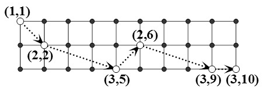

现有一个 $n$ 行 $m$ 列的棋盘，一只马欲从棋盘的左上角跳到右下角。每一步它向右跳奇数列，且跳到本行或相邻行。跳越期间，马不能离开棋盘。
例如，当 $n = 3, m = 10$ 时，下图是一种可行的跳法。

试求跳法种数 $\bmod 30011$。
仅有一行，包含两个正整数$n, m$，表示棋盘的规模。
仅有一行，包含一个整数，即跳法种数 $\bmod 30011$。
3 5
10
对于 $100\%$ 的数据，$1 ≤ n ≤ 50，2 ≤ m ≤ 10^9$
 Comet OJ
Comet OJ